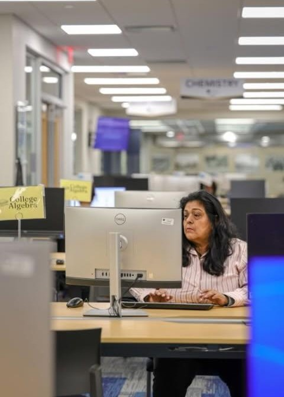

Born in Michigan. Raised with purpose. #5minuterule🕠

Born in Michigan — my favorite color is green, my favorite food is lasagna, and my favorite movie is It's a Wonderful Life. Raised with purpose. #5minuterule🕠
I was raised in Toledo, Ohio, and attended Libbey High School. Growing up in the Glass City taught me the value of resilience, community, and never giving up on your dreams.
As a coach, I've dedicated my career to helping young people discover their potential and achieve their goals. Whether on the field, on the court, in the ring, in the classroom, or in life, I believe everyone deserves the opportunity to succeed.
My coaching philosophy centers on empowerment, accountability, and community. I don't just teach skills—I help build character. Every young person I work with learns that their background doesn't define their future and rules are important.
Investing in the next generation through mentorship, coaching, and community programs that give young people the tools they need to succeed.
Creating spaces and opportunities that bring people together, fostering connection and collective growth in Toledo and beyond.
Advocating for equal opportunities for all, ensuring that no one is left behind due to circumstances beyond their control.
Democracy works when people participate. I believe in activating every voice — especially in underrepresented communities — because real change starts at the ballot box. Civic engagement is an act of empowerment, and I am committed to encouraging and educating the people around me to show up, speak up, and vote.
Investing in our youth means investing in their character, their memories, and their spirit. At Revamping Families, we teach that brotherhood and sisterhood are the most expensive things you will ever own. We are calling families back to the foundation of the Church. You don't have to go to my church, but I invite you to find a place that speaks to your soul, just as Gethsemane Christian Discipleship Church speaks to mine every Sunday at 10:30 am. Become a member of a faith-based community and watch how your road changes. Because without FAITH, the road has no destination.